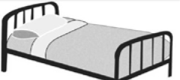

GENIŞ AİLE
Büyükbaba, büyükanne, kayın peder, kayın valide, gelin, iki kız kardeş, iki anne ve iki babadan oluşan geniş bir ailenin bütün fertleri bulaşıcı hastalığa yakalandılar. Hastalık bulaşıcı olduğu için hepsi de eski bir hastanenin 10 yataklı koğuşuna alındılar. Siz olsaydınız bu insanları bu 10 yatağa nasıl dağıtırdınız?
Cevap:
Ailede yalnızca 7 kişi vardır: Büyükbaba ve büyükanne, onların oğlu ve gelini ile bu oğul ve gelinin ikisi kız, biri erkek üç çocuğu. Her biri birer yatak aldıktan sonra 3 yatak da artmaktadır.
